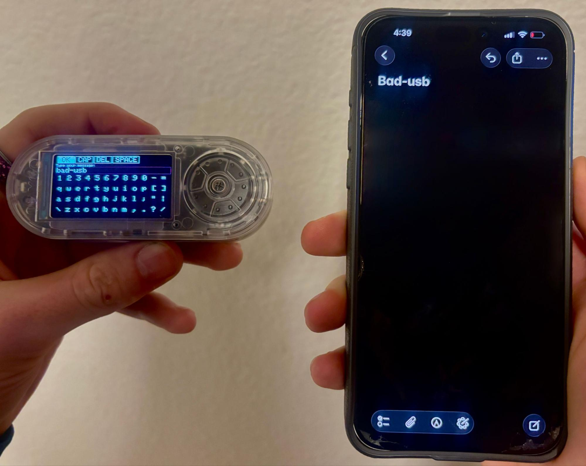
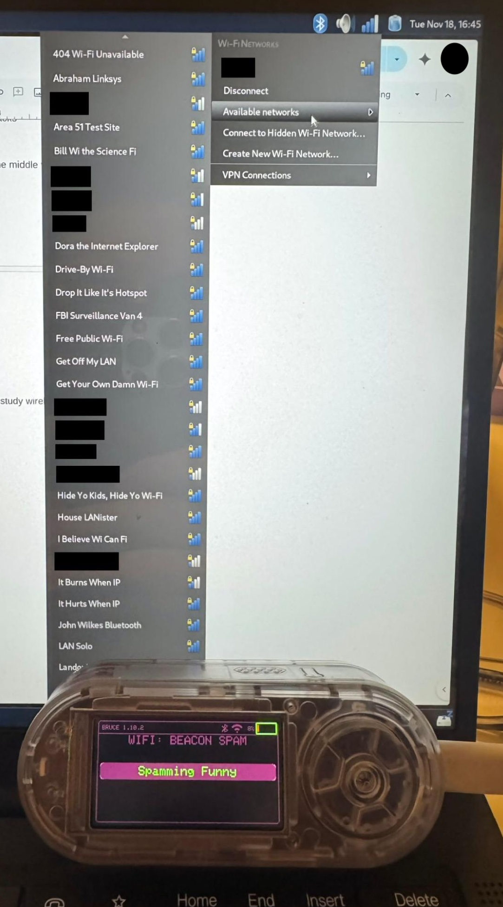
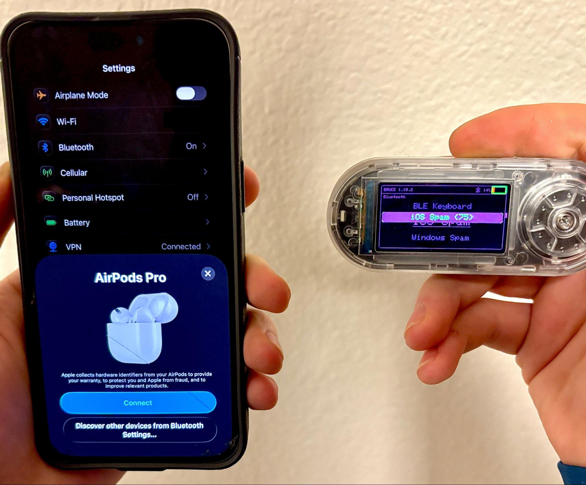
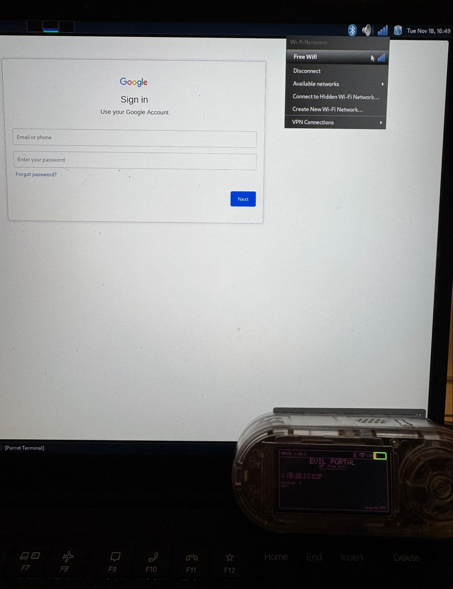
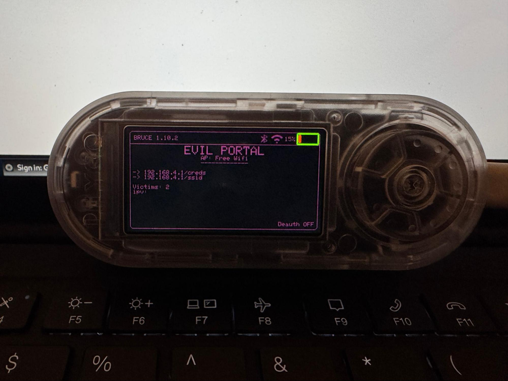

Note: Everything here was done on my own equipment in a controlled lab, with no other people or networks involved. These techniques can cause real harm and are illegal to use against systems you don't own or have written permission to test. I built this to understand the attacks well enough to defend against them, nothing more.
Introduction
I wanted to get my hands on the physical and wireless side of security, not just the stuff that lives inside a VM. So I took a LILYGO T-Embedded CC1101+, a little ESP32-based gadget that fits in your palm, and flashed Bruce firmware onto it to turn it into a compact wireless pentesting tool. From there I worked through the different attack types it can do, all in my own lab, mostly to understand what these attacks actually look like and why the defenses against them matter.
What I Did
- Flashed Bruce firmware onto the LILYGO T-Embedded CC1101+
- Configured and tested the device modules (WiFi recon, BLE scan, HID injection)
- Tested HID/BadUSB payload execution on a machine I own
- Evaluated BLE advertisement attacks
- Read unsecured broadcast data like RFID tag IDs
How It Works
WiFi Recon
Uses the ESP32's promiscuous mode to capture probe requests and identify nearby devices and SSIDs. It's a good demonstration of how much a network gives away passively, and why wireless hygiene matters.
Deauth / Beacon Flood
Sends 802.11 management frames to demonstrate wireless denial-of-service concepts. I only ran this against my own test network. The takeaway here is how trivially unprotected management frames can be abused, and why protections like 802.11w exist.
HID Injection (BadUSB)
The device can present itself as a USB keyboard and type out a scripted payload faster than any human could. It's a hands-on way to understand why endpoint USB hardening and not trusting random devices actually matters.
Bluetooth / BLE Scanning
Scans for BLE advertisements, identifies insecure pairing methods, and shows how much consumer IoT gear leaks over Bluetooth. Good for understanding IoT attack exposure.
RFID / NFC Reading
Energizes nearby RFID/NFC tags and reads the ID data they broadcast, identifying the tag type (like 125 kHz low-frequency tags) and any unencrypted credentials. It's a clear demonstration of how weak a lot of physical access control still is.
Examples
A few of the modules running in my lab.





Defensive Takeaways
The whole point of building this was the defensive side. Running each attack made the corresponding defense click in a way reading about it never did:
- Why network segmentation matters against rogue wireless devices
- Why MAC randomization is worth having on
- How endpoint USB hardening shuts down HID/BadUSB attacks
- The real-world risk of BLE leakage in consumer devices
- How packet injection and man-in-the-middle attacks actually come together
- Why unencrypted RFID badges are a physical security problem
Skills Demonstrated
- Firmware flashing and microcontroller work
- Wireless security concepts (WiFi, BLE)
- HID attack fundamentals
- BLE security analysis
- Embedded device configuration